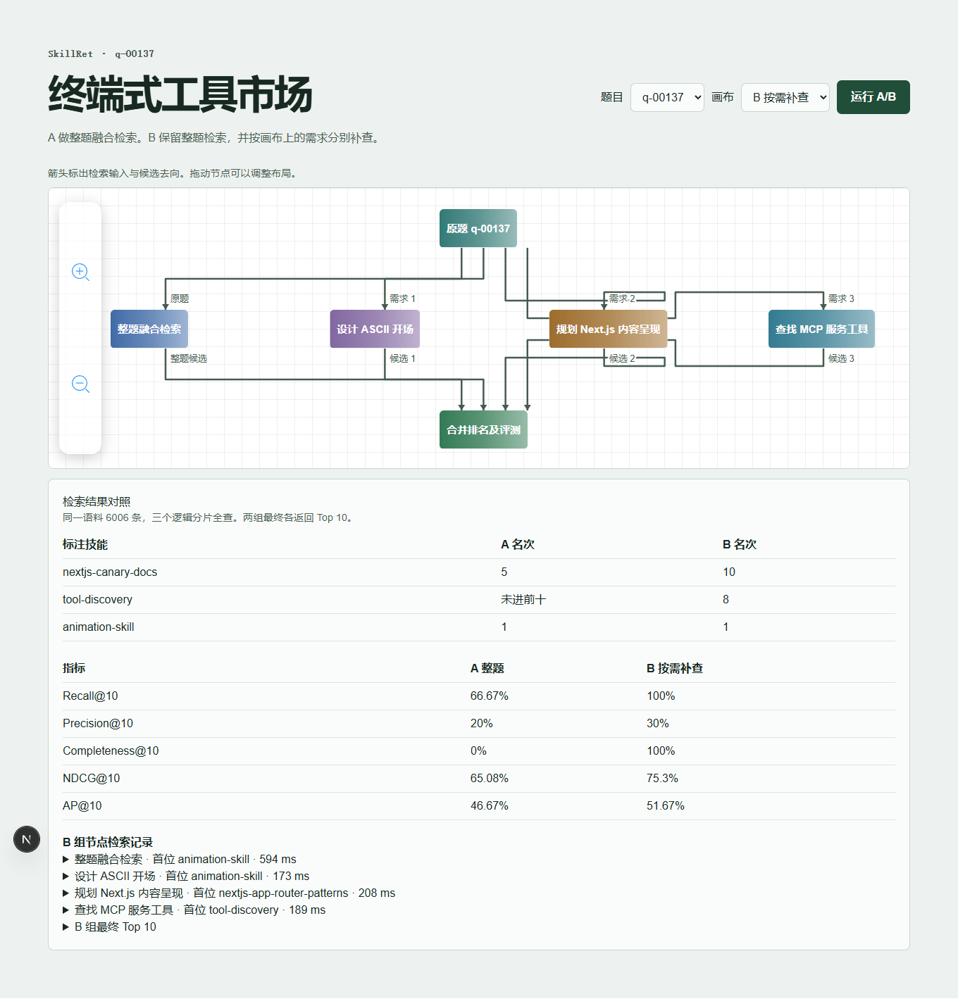

q-00137 终端式工具市场
tool-discovery 在工具分支排第 1，最终排第 8。nextjs-canary-docs 后移到第 10，标注技能仍全部找齐。
A/B 指标
| 指标 | A 整题 | B 按需求补查 |
|---|
| Recall@10 | 66.67% | 100.00% |
| Precision@10 | 20.00% | 30.00% |
| Completeness@10 | 0.00% | 100.00% |
| NDCG@10 | 65.08% | 75.30% |
| AP@10 | 46.67% | 51.67% |
数据集标注技能的名次
| 标注技能 | A | B |
|---|
| nextjs-canary-docs | 5 | 10 |
| tool-discovery | 未进前十 | 8 |
| animation-skill | 1 | 1 |
原题与 B 组各节点
整题融合检索
Set up a Next.js App Router project for our CLI tool marketplace "TerminalVault" — I want the landing page to feature an animated ASCII art splash banner that plays a retro terminal-style boot sequence animation (think old CRT startup with our logo assembling character by character) before revealing the main content using server components and streaming. Also, I need to wire up several backend integrations for managing tool listings — we'll need JIRA for tracking submission reviews, Slack for notifying maintainers, and Google Docs for generating changelogs — so please discover what MCP tools are available for each of those services and map out the full workflow for how a new tool submission flows through the pipeline. For the Next.js piece specifically, I want to understand the best way to handle the transition from the ASCII splash animation to the streamed server component content using Suspense boundaries, and whether I should use route intercepting or parallel routes for the tool detail modals.
- animation-skill
- nextjs-app-router-patterns
- nextjs-knowledge-skill
- react-server-components-framework
- nextjs-canary-docs
- front-end-skill
- spawn:terminal
- aceternity-ui
- nextjs-boilerplate
- gaming-entertainment
设计 ASCII 开场
Create an animated CRT-style ASCII terminal splash banner that assembles a logo character by character before revealing the CLI tools marketplace.
- animation-skill
- tui-designer
- gaming-entertainment
- ASCII Visualizer
- spawn:terminal
- ckm:design
- cli-ux-tester
- designing-clis
- hierarchy-tree
- character-world-init
规划 Next.js 内容呈现
Plan transitions from an animated splash to streamed Next.js App Router server components. Use Suspense boundaries and compare intercepted and parallel routes for tool detail modals.
- nextjs-app-router-patterns
- nextjs-knowledge-skill
- react-server-components-framework
- vercel-react-best-practices
- implementing-code-splitting
- tailwindcss-animations
- nextjs-canary-docs
- animation-skill
- frontend-dev-guidelines
- educator-teacher
查找 MCP 服务工具
Discover available MCP tools for Jira review tickets, Slack maintainer notifications, and Google Docs changelogs. Map the tools to the submission workflow.
- tool-discovery
- mcp-management
- julien-mcp-installer
- mcp-server-dev
- jira:review
- mcp-tester
- hosted-mcp-server
- mcp-mastery
- mcp-review
- mcp-directory
最终候选
A Top 10
- animation-skill
- nextjs-app-router-patterns
- nextjs-knowledge-skill
- react-server-components-framework
- nextjs-canary-docs
- front-end-skill
- spawn:terminal
- aceternity-ui
- nextjs-boilerplate
- gaming-entertainment
B Top 10
- animation-skill
- nextjs-app-router-patterns
- nextjs-knowledge-skill
- tui-designer
- gaming-entertainment
- react-server-components-framework
- vercel-react-best-practices
- tool-discovery
- mcp-management
- nextjs-canary-docs
RSI 实测截图
